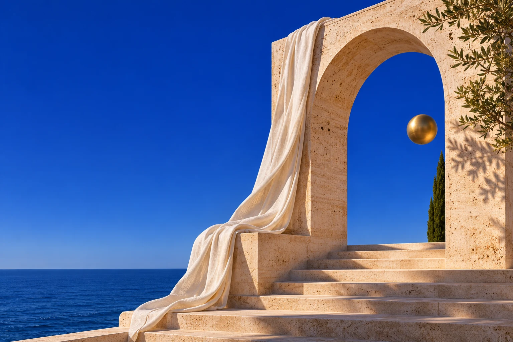
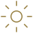

DAHA AZ GÜRÜLTÜ
DAHA ÇOK HİS
LIFE YAVAŞLIĞIN ESTETİĞİ
Hayatı biraz
yavaşlat
Bir doku. Bir ışık. Bir his
Güzel yaşamak, küçük şeyleri fark etmekle başlar

DAHA AZ GÜRÜLTÜ
DAHA ÇOK HİS
LIFE YAVAŞLIĞIN ESTETİĞİ
Bir doku. Bir ışık. Bir his
Güzel yaşamak, küçük şeyleri fark etmekle başlar
GENTLEVIE JOURNAL
SAYI 01 / BİR BAŞLANGIÇ
Üzerine düşündüğümüz şeyler
Dokular, mekânlar ve arada kalan anlar
Renklerin, dokuların ve sana ait bir stilin peşinde
Güne başlamadan önce, kendine ayırdığın o kısa an
GENTLEVIE ÜZERİNE

GentleVie, stil ve yaşam üzerine bağımsız bir editoryal bakış. İyi hissettiren bir kumaşın, yaşanmış bir mekânın, hatırlamaya değer bir anın peşinde.
Kendi ritmini bulmak için bazen yalnızca biraz durmak yeter. Burada o duraklara yer açıyoruz.
The art of living well